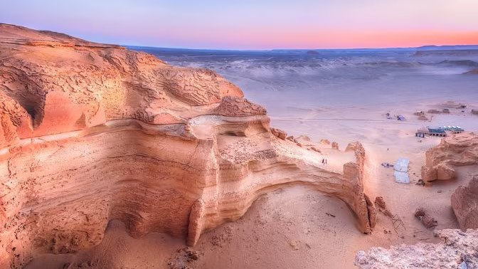

Valley of The Whales

More Informaion about Valley of The Whales
The Valley of the Whales, also known as Wadi Al-Hitan, is a UNESCO World Heritage site located in the Western Desert of
Egypt, about 150 kilometers southwest of Cairo. It is famous for its rich fossil history, specifically of ancient whales
that lived millions of years ago. The valley is a key paleontological site, revealing evidence of early whale evolution.
It offers a fascinating glimpse into Earth's ancient past.
Here's a breakdown of key information and activities you can enjoy when visiting the Valley of the Whales:
Top Activities in Valley of The Whales:
Fossil Exploration
- Guided Tours
A guided tour is the best way to experience the Valley. Local experts take you to see the fossilized whale
skeletons, explaining their history and significance. The guides often share stories about the discovery of the fossils
and the area's evolution over time.
- Fossil Observation
Some areas of the valley are accessible to visitors, allowing you to see the fossilized remains
directly in the field. Some of these fossils are embedded in rocks, while others are displayed in more accessible locations.
Hiking and Exploration
- Desert Trekking
The surrounding desert landscape is perfect for trekking and exploring. You can walk through the valley
and enjoy the vast expanse of sand dunes and rocky hills. It's an excellent place for those interested in both
paleontology and natural beauty.
- Rock Formations
The region features striking rock formations and natural landscapes, some of which resemble scenes from
prehistoric times. These rock formations are also fascinating to explore for those interested in geology and desert landscapes.
Photography
- Scenic Views
The valley is a photographer's dream. With its unique combination of desert landscape, fossilized remains,
and rocky outcrops, there are plenty of opportunities to capture stunning photos.
- Wildlife Photography
While the valley is mostly known for its fossils, you can also spot desert wildlife such as foxes,
lizards, and different species of birds, making it interesting for wildlife photographers as well.
Desert Safari
- 4x4 Desert Safaris
Visitors can take 4x4 jeep tours from Cairo to the Valley of the Whales, which is a great way to
experience the Egyptian desert landscape. Along the way, the safari guides often share interesting facts about the
desert ecosystem.
- Sand Dune Adventures
If you're looking for adventure, you can try sandboarding or simply ride across the dunes in a
jeep. The surrounding desert offers a thrilling experience for those seeking some adrenaline.
Best Time to Visit:
- Between October and April
The best time to visit the Valley of the Whales when the weather is cooler and more comfortable.
- Summer months
Can be extremely hot, with temperatures soaring above 40°C (104°F).